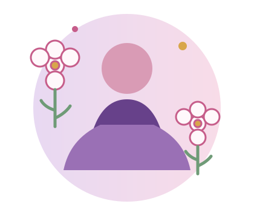

PCOS / PMOS
Learn about hormonal and metabolic features, symptoms, diagnosis, and management.
Explore PCOS / PMOS →Clear, accessible information about PCOS/PMOS and endometriosis — two different conditions that can affect menstrual health, fertility, and quality of life.

Understand common symptoms, learn how conditions are assessed and managed, and know when to seek professional care.
Learn about hormonal and metabolic features, symptoms, diagnosis, and management.
Explore PCOS / PMOS →Understand symptoms, pain, diagnosis, treatment, and possible effects on fertility.
Learn about endometriosis →Review symptoms associated with each condition and why symptoms alone are not a diagnosis.
Review symptoms →Explore key differences and areas where symptoms or effects may overlap.
Compare conditions →Learn how to record patterns and prepare for a conversation with a healthcare professional.
Build awareness →Find answers to common questions and links to recognized health information.
Read FAQs →Persistent or severe menstrual pain, recurring pelvic pain, significant menstrual changes, or fertility concerns deserve discussion with a qualified healthcare professional.